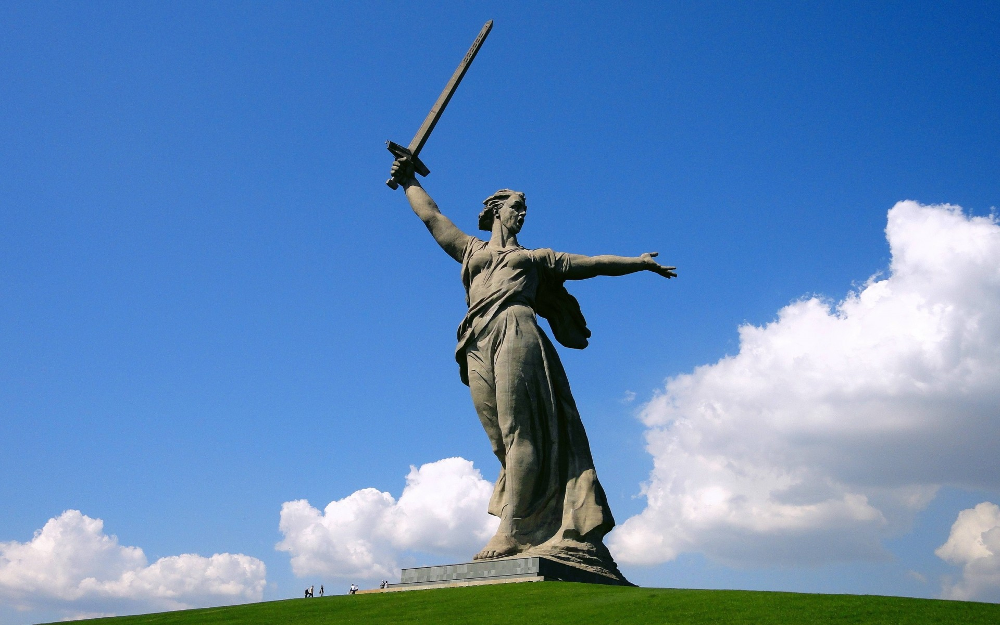

Волгоград
Волгоград
| КАРТА | СИМВОЛИКА | ОБ АВТОРЕ |
|
|
 Город Герой Волгоград Волгоград один из самых известных и значимых городов носящих звание Города – героя. Летом 1942 года немецко-фашистские войска развернули массированное наступление на южном фронте, стремясь захватить Кавказ, Придонье, нижнюю Волгу и Кубань – самые богатые и плодородные земли СССР. В первую очередь, под удар попал город Сталинград, наступление на который было поручено 6-ой армии под командованием генерал-полковника Паулюса. Двенадцатого июля советское командование создает Сталинградский фронт, основная задача которого остановить вторжение немецких захватчиков на южном направлении. 17 июля 1942 года началось одно из самых великих и масштабных сражений в истории Второй мировой войны – Сталинградская битва. Несмотря на стремление фашистов захватить город как можно скорее, она продолжалась 200 долгих, кровопролитных дней и ночей, закончившись полной победой, благодаря самоотверженности и неимоверным усилиям героев армии, флота и простых жителей области. Город герой Волгоград, Мамаев курган. Площадь "Стоявших насмерть" Первое нападение на город состоялось 23 августа 1942 года. Тогда чуть севернее Волгограда немцы почти подошли к Волге. На защиту города были направлены милиционеры, моряки Волжского флота, войска НКВД, курсанты и другие добровольцы-герои. В ту же ночь немцы совершили первый авианалет на город, а 25 августа в Сталинграде было введено осадное положение. В то время, в народное ополчение записалось около 50 тысяч добровольцев - героев из числа простых горожан. Несмотря на практически беспрерывный обстрел, заводы Сталинграда продолжали работать и выпускать танки, «катюши», пушки, минометы и огромное количество снарядов. 12 сентября 1942 года враг вплотную подошел к городу. Два месяца ожесточенных оборонительных боев за Волгоград нанесли немцам существенный урон: враг потерял около 700 тысяч человек убитыми и ранеными, а 19 ноября 1942 года началось контрнаступление советских войск. 75 дней продолжались наступательная операция и, наконец, враг под Сталинградом был окружен и разбит. Январь 1943 года принес полную победу на этом участке фронта. Фашистские захватчики были окружены, а генерал Паулюс со всей армией сдался в плен. За все время Сталинградского сражения немецкая армия потеряла более 1,5 миллиона человек. Сталинград был одним из первых назван городом-героем. Это почетное звание было впервые озвучено в приказе главнокомандующего от 1 мая 1945 года. А медаль «За оборону Сталинграда» стала символом мужества защитников города. |  |
 |